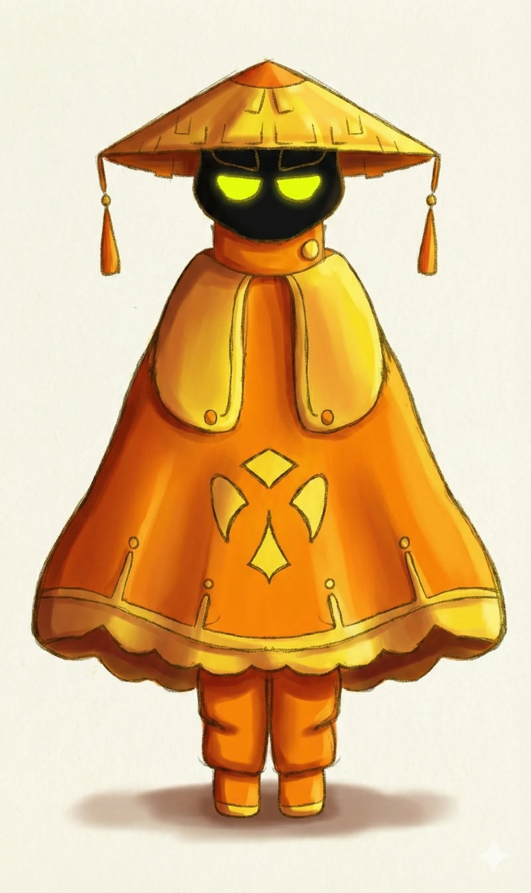
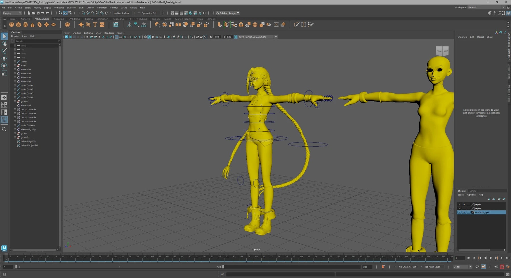
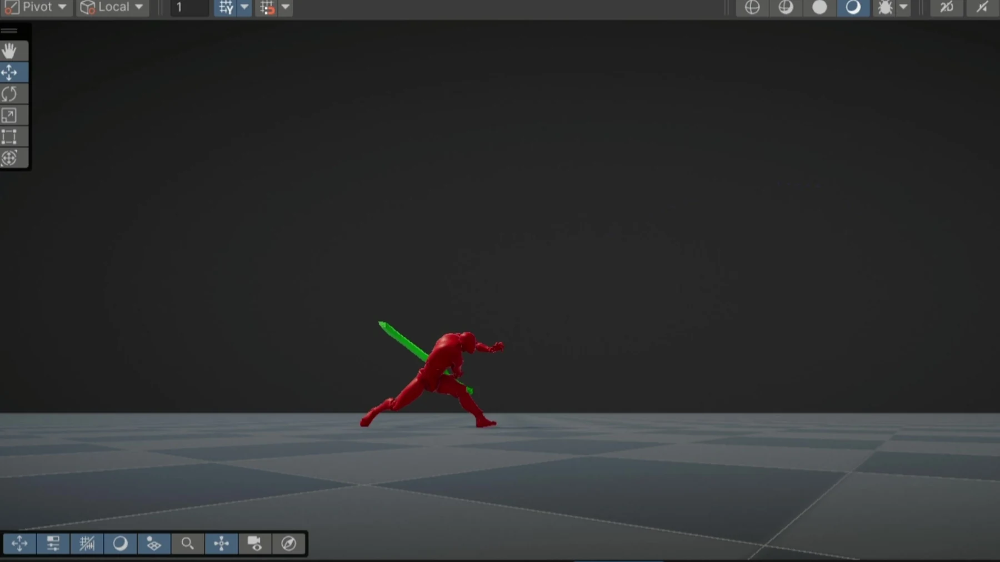

On display
Selected work.
Characters, environments and the work behind them.
12 projects shown

Corner Café
Environment
BL3
Robot productionVERT
Character production
Weathered Treasure Chest
Stylized prop
Cheni
Original character
Vapo
Character + props
Papa + Mama
Character modeling studies
3D Studies
Form, surface + creatures
Honguito
Model + motion
Maya Rigging
Rigging
Character in Motion
Animation studies
Slash VFX
Real-time effectsNo projects match this selection. Choose All to see the complete portfolio.
I create stylized
3D worlds with
character.
3D artist focused on stylized modeling and character-driven animation. I work across Blender, Maya and Unity, from UVs and textures to rigging and real-time effects.
Focus
- 3D Modeling
- Character Design
- Animation
- Rigging
- Real-time VFX
Tools
Blender · Maya · Unity · Substance 3D · Procreate
Juan Esteban Araujo Ortiz
3D Artist & Modeler · Medellín, Colombia
Let's create something
with character.
arajuanes405@gmail.comExplore more work on ArtStation.